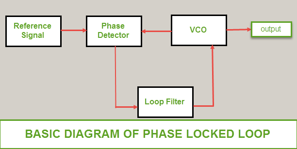

Adam M. Walls
203 Loch Lomond Drive, Lexingto, KY, 40517 | (859)-684-3562 | avvallky@gmail
Education
A.S. | Pre-Engineering | GPA: 3.81 | May 2015 | Bluegrass Community and Technical College
B.S. | Computer Engineering | GPA: 3.84 | May 2018 (Expected) | University of Kentucky
Relevant Skills
- C/C++
- HTML
- Bootstrap
- TCP/IP Network Programming
- Unix/Linux
- Verilog
- Python
- CSS
- MySQL
- System Programming
- Vi/Vim
- ARM Assembly
- MATLAB
- PHP
- Git
- SVN
- gdb
Relevant Experience
-
May 2017 – Aug 2017Dynetics, Inc. - RF & EW Software Development (intern)
- Wrote a MATLAB script modeling the movement of a towed object behind a moving aircraft as a proof of concept for the C++ model implementation
- Allowed one to specify the cable length, reel out velocity, acceleration, jerk, and snap/jounce as input parameters to the model
- Allowed one to specify the object’s physical characteristics like mass, length, drag coefficient, etc.
- Displayed the cable length, reel out velocity, acceleration, and jerk curves as the towed-object was reeled out to insure the desired reel out was achieved
- Generated a text file containing the results of the simulation that could be fed into SIMDIS simulation software, which played back a video of the simulation
- Validated the model through unit testing and confirmed it followed Newtonian physics equations
-
Converted model into the company's C++ target model source code
- Created supplementary class to contain the reel out parameters specified as inputs to the model
- Created supplementary class to contain the decoy’s physical characteristics and position and orientation at each time step in the simulation
- Implemented class methods to perform same functionality as MATLAB code
-
Dec 2014 - May 2017East Kentucky Power Cooperative - Operations Engineer (intern)
- Designed and implemented features to the company’s existing Python code that interfaced with MySQL to automate queries and export them to a report in Excel
- Implemented simple python scripts to export data to excel using PSSE software APIs
- Write python script to read a contingency (text) file, extracting several string and integer data fields needed to study the status of the company’s electric system
- Developed a program with the help of the PSS/E Python API to grab a list of contingencies (set of nodes taken out of the power system) from a text file, all of EKPC’s bus numbers, their base kV, lowest kV from all of the contingencies, and which contingency caused it
Class Projects
Project Skills
- Designed and implemented a client-server program in C using socket programming and TCP/IP protocol
-
The server would allow for 4 different requests:
- Put sent a file's contents to the server.
- Get requested a file's contents from the server.
- Delete removed a file from the directory the server used to store files.
- List printed the server's file contents.
 |
- Designed and implemented a movie database webpage utilizing PHP and HTML
-
Interfaced with a database stored in MySQL which allowed the following:
- Register as a standard user
- Get requested a file's contents from the server.
- Delete removed a file from the directory the server used to store files.
- List printed the server's file contents.
 |
 |
 |
- Designed and implemented a simple shell similar to Unix in C++
-
It performed several tasks including the following:
- Print a list of active processes by checking active PIDs
- Execute programs
- Change directories
- Change the user prompt and move a process to work in the background then prompt the user for the next instruction
 |
- Designed and implemented a 16-bit multi-threaded and pipelined CPU with separate data and instruction cache and prefetch capabilities in Verilog
-
Designed the assembly encoding for the CPU instructions
- Encoded 21 different instructions with a 4-bit opcode
- Processed two threads so that two different processes could execute simultaneously
-
Consisted of four different pipeline stages
- The instruction cache was checked for load instruction opcodes
- The data cache was checked for load data opcodes
 |
 |
- Designed and implemented in C a program that altered how fast an ARM microcontroller’s onboard LED flashed
- The LED was given a certain rate at which it would flash at room temperature
- As the temperature around the microcontroller increased, phase-lock loop increased the so that the LED flashed more quickly
- As the temperature was decreased, phase-lock loop decreased the clock frequency so that the LED flashed more slowly
|
|  |
- Implemented a traffic/pedestrian light controller on an ARM microcontroller in ARM Assembly language
- The traffic light would be set to green initially
- If someone pressed the pedestrian crosswalk button, the traffic lights would change from green to yellow to red
- After a delay, the pedestrian light would turn on for 15 seconds, begin flashing after 5, and then turn off
- Finally, the traffic light would turn on again and the pedestrian would not be able to request a crosswalk until a 15 second delay